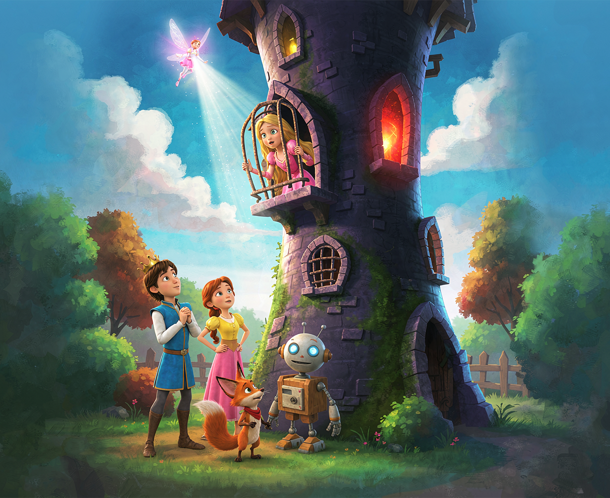

剧情简介大型少儿奇幻动画 | 全 26 集
小王子生活在一个没有魔法的王国。一天，他的姐姐在森林边失踪了，只留下几片会发光的羽毛。循着微光，小王子独自走进森林深处，却在第三道弯口迷了路。
就在这时，智慧仙子出现了。她不会替小王子走路，却会在他停下脚步时给出一句提醒；她不会直接打败巫婆，却能让小王子看见那些别人看不见的线索。
一路上，小王子结识了性格各异的伙伴：胆小却机灵的小狐狸、热心肠的木头机器人、还有总爱唱反调的乡村女孩小葵。他们一起穿过荆棘沼泽、解开石门谜题、在镜之谷里找回迷失的方向。每个人都不完美，但每个人都有自己的光。
最终，他们在森林尽头的黑塔里找到了被巫婆抓走的姐姐。然而真正的难关不是巫婆，而是小王子必须独自做出一个选择——是接受仙子的捷径离开，还是相信伙伴们的力量，一起把姐姐带回家。
动画主题：智慧不是知道所有答案，而是在看不清的时候，仍然愿意迈下一步。
适合年龄：4 岁及以上亲子共赏。
主要角色人物设定
小王子
王国的幼子，有点倔，认定的事会一直做下去。姐姐的失踪让他第一次走出城堡，也是第一次发现"勇敢"不是不害怕，而是害怕时还往前走。
智慧仙子
住在微光里的精灵，体型很小，声音很轻。她从不直接给答案，只会指向下一步该留意的方向。她说："路要你自己走，但你可以问路。"
小公主 / 姐姐
比小王子大三岁，喜欢画画和读故事。被抓走后，她在塔里用石头摆地图、在窗台上留记号——她也在想办法让弟弟找到自己。
迷途巫婆
不是纯粹的反派，而是"总想让事情按她记忆里的样子重来"的老妇人。她设下重重阻碍，却总在关键处留下一线生机。
小狐狸
自称森林里最聪明的向导，其实最怕黑。遇到危险时腿会发抖，但耳朵永远竖着，能听见风里的脚步声。
木头机器人
被巫婆遗弃在老树洞里的旧玩具，身体里装着八音盒。只要上紧发条，他就会说鼓励的话；只是发条越来越短了。
乡村女孩小葵
熟悉森林每一条"地图上不存在"的小路。她不信仙子，只信自己的脚。和小王子吵过三次架，但每次都回来找他。
精彩剧照来自第 18 集《黑塔前的最后一夜》

黑塔前，智慧仙子以光为桥，为小王子一行人指引姐姐所在的方向。
播出时间少儿频道
首播：每周六 17:30，本市电视台少儿频道（KLTV-5）
重播：每周日 09:00、每周三 16:00
网络平台：本周六首播后次日上午上线（节目回放功能建设中）
以上播出时间如有调整，请以 KLTV 少儿频道当日预告为准。
本周节目单
周六 17:30
第 18 集 黑塔前的最后一夜
周日 09:00
第 17 集 镜之谷
周三 16:00
第 16 集 会说话的石头
相关信息
- 出品：本市电视台 KLTV
- 制作：青麓动画工作室
- 集数：26 集
- 单集时长：约 13 分钟